脸型
LUCAS 的脸：粉绿虹膜、尖眼线和腮红
窗口是 VRoid Studio 1.24.1，界面是日文。做到皮肤纹理之后，标题栏变成 VRoid技術評論社.vroid*。星号是这一份还没保存。画面上的说明写这是《VRoid Studioの表現を広げる 3Dアバターメイキング講座》第 2 章「顔を作ろう」、从 p24 起的录像。简介里的软件是 VRoid Studio 和 Clip Studio Paint，视频里两个都在用。自动字幕几乎只有音乐，下面只记画面上的操作。数值是那一帧能读出来的，滑杆后面还在动。
先把肤色和脸颊定下来
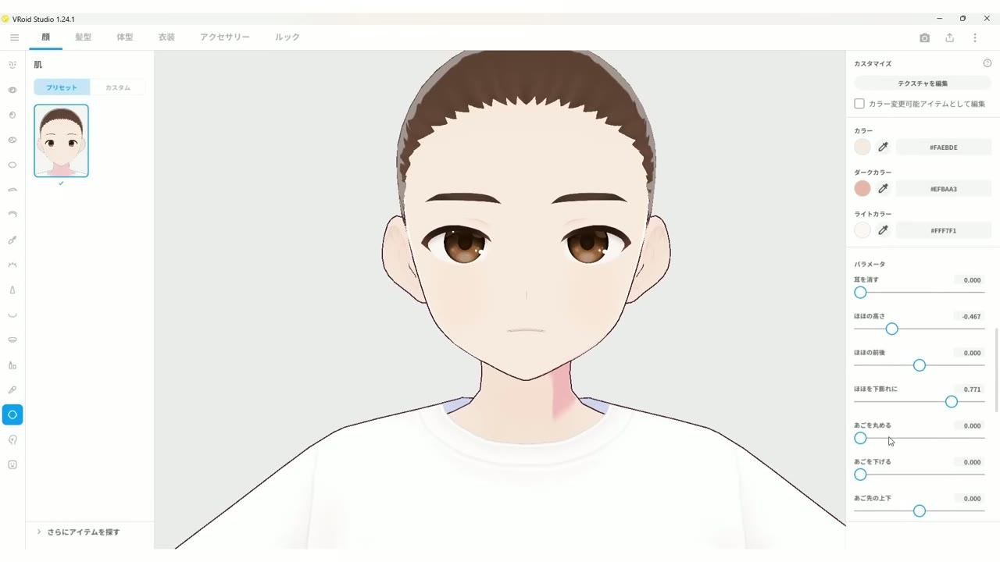
模型还是默认的棕色眼睛和短发，脖子侧面有一块默认的粉痕，不是后画上去的。肤色这一帧カラー是 #FAEBDE，ダークカラー（暗部色）是 #EFBAA3，ライトカラー（亮部色）是 #FFF7F1。脸颊ほほの高さ是 -0.467，往左就是把脸颊放低；ほほを下顎に是 0.771，往右是让脸颊往下颌收。耳を消す、ほほの前後、あごを丸める、あごを下げる、あご先の上下都是 0.000，耳朵还在，下巴没改圆。更早的侧面停在鼻（鼻子）页，那时鼻の下の高さ是 0.784，其余鼻参数是 0.000，和后面的鼻形不是同一组数。
在瞳上铺粉绿虹膜
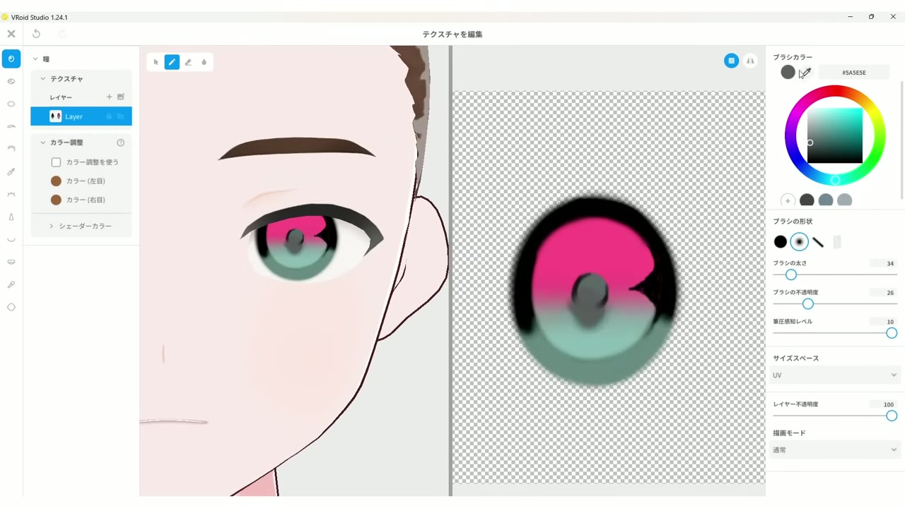
不改预设瞳色，另开一层来画。カラー調整を使う没勾，左右眼的颜色块还是原来的棕色，脸上的粉绿来自这一层。先用 #8DC1B9、笔粗 213、不透明度 25 铺一圈薄荷绿，再在上半盖上粉红。外圈和瞳孔随后描成黑色，虹膜里留一块月牙高光。这一帧是在修边缘，笔色 #5A5E5E，粗细 34，不透明度 26，サイズスペース（尺寸空间）是 UV，描画モード（绘画模式）是通常。笔压感知这几帧都停在 10。
把虹膜导出成 PNG
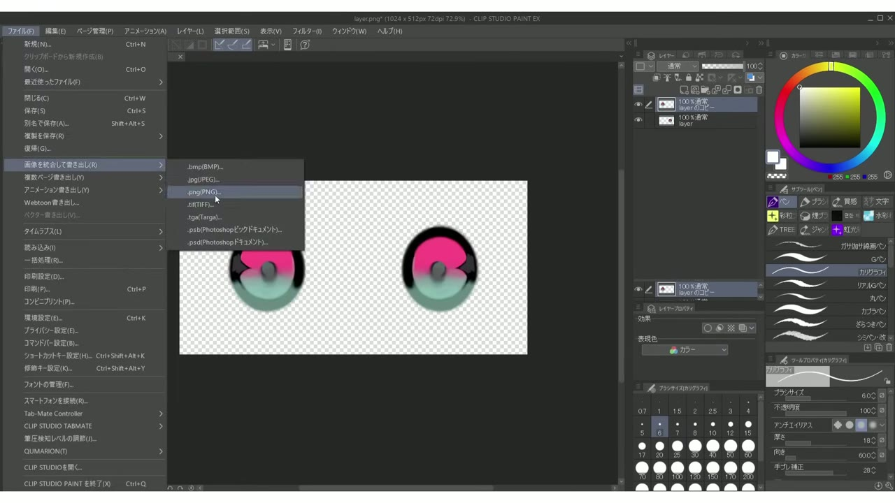
虹膜贴图被拿到 CLIP STUDIO PAINT EX 里。稍早一帧还是左眼发灰、右眼已经上色，选中的是投げなわ選択（套索）。这一帧两只眼都是粉绿，正在用「画像を統合して書き出し」（合并图像后导出）写成 PNG。中间还开过另一个文件 image.png，同样是 1024×512，透明底上画了两个小黑圈，那是高光稿，不是这张虹膜。回到 VRoid 后，目のハイライト（眼睛高光）的默认 Layer 上只有两个小白点；虹膜纹理里的月牙高光是另外留的。
眼线先描上眼尾
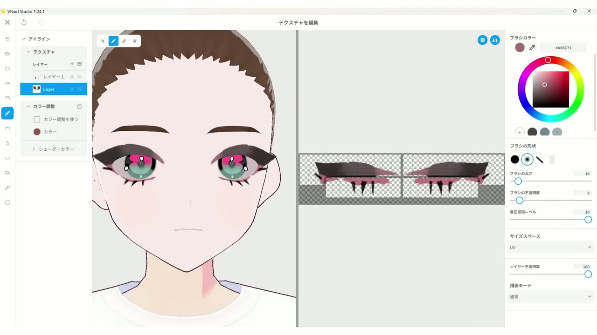
眼线从两条分开的、两头收尖的黑线开始，当时笔很粗。铺开之后变成上眼尾一条黑、下缘一抹粉，再往下加三根刺，脸上就成了带尖的眼线。这一帧是在已有眼线上轻修：笔色 #A06C71，粗细只有 19，不透明度 8，尺寸空间是 UV，绘画模式通常。不透明度这么低盖不出那块实黑，实黑是前面几笔留下的。
用目セット改眼型
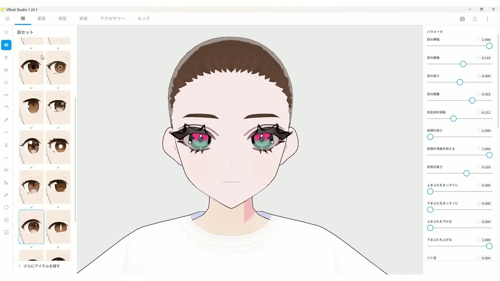
眼线已经在脸上，这里改的是眼型，不是贴图。这一帧目の横幅拉到最右 1.000，眼睛变宽；目の縦幅只有 0.115，没有拉高。目の距離 0.423，两眼分开一点。目全体を回転 -0.211，整只眼略转。目頭の高さ到最左 -1.000，眼头压低；目頭の湾曲を抑える到最右 1.000，眼头的弯被压平。目尻の高さ 0.229，眼尾略抬。下まぶたを上げる到最右 1.000，下眼睑抬起来。目の高さ、上下眼睑拉直、上まぶたを下げる、ジト目（半睁的不爽眼）都是 0.000。同一页后面还在改距离和旋转，这组不是最后锁死的值。
白目用乘算压一圈
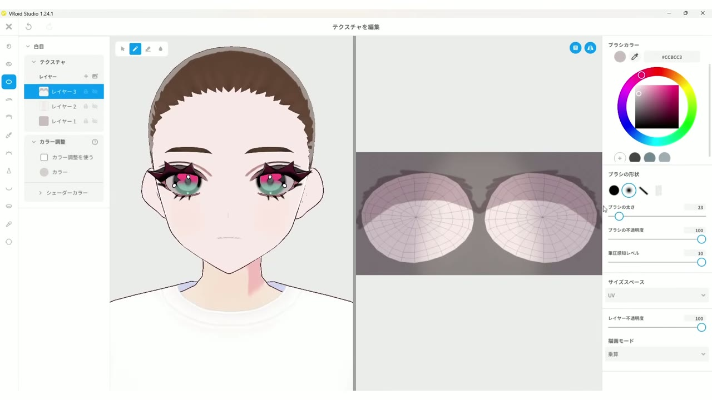
眼白不涂实色。レイヤー3 上用灰粉 #CCBCC3，笔粗 23、不透明度 100，绘画模式改成乗算（正片叠底），尺寸空间是 UV。乘算会让底下的眼白变暗，所以外圈压出一圈影，中心还是亮的。眼睛本身的粉绿虹膜和尖眼线不动。
在陰影上画下眼睑
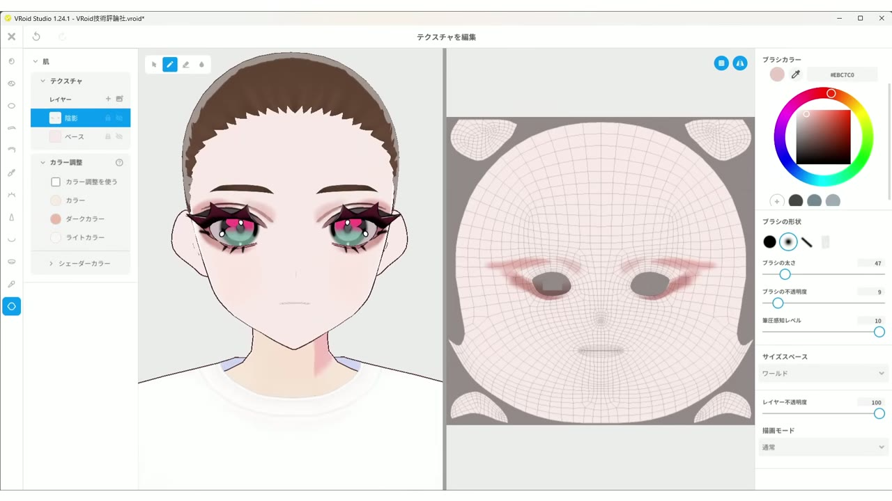
ベース是锁住的粉底，不在上面画。阴影画在陰影上，笔色 #EBC7C0，粗细 47，不透明度只有 9，所以是淡淡一层。サイズスペース改成ワールド（按模型表面算笔的大小，不是按 UV 方块）。这一帧画的是下眼睑两条浅影。笔再往鼻梁、面颊扫的时候，脸上会多出一条鼻影和颊侧的红。阴影上面后来还有レイヤー1：笔色 #F0CDC6、粗细 45、不透明度 30，圆笔停在下巴。到画眉毛时，眼下、鼻侧和下巴已经能看见小黑点，画面没有停在点下去的那一笔。
チーク轻轻扫腮红
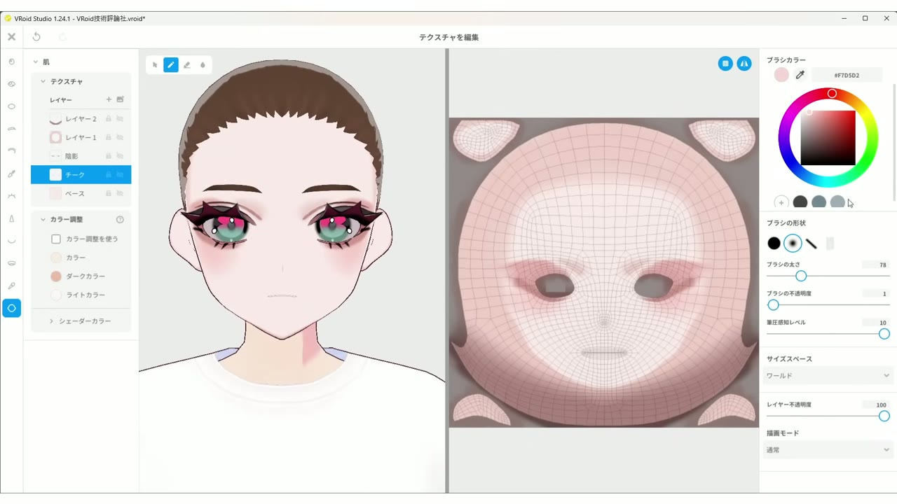
腮红单独一层，不和阴影混在一起。脸上两颊的粉已经在了。这一帧笔色 #F7D5D2，粗细 78，不透明度只剩 1，尺寸空间是ワールド，等于在已有腮红上再拂一下，几乎看不出新的一块。稍早一笔更实，颜色接近 #F8CBC3，粗细 76、不透明度 48。ベース仍然锁着。
在嘴里画一条唇线
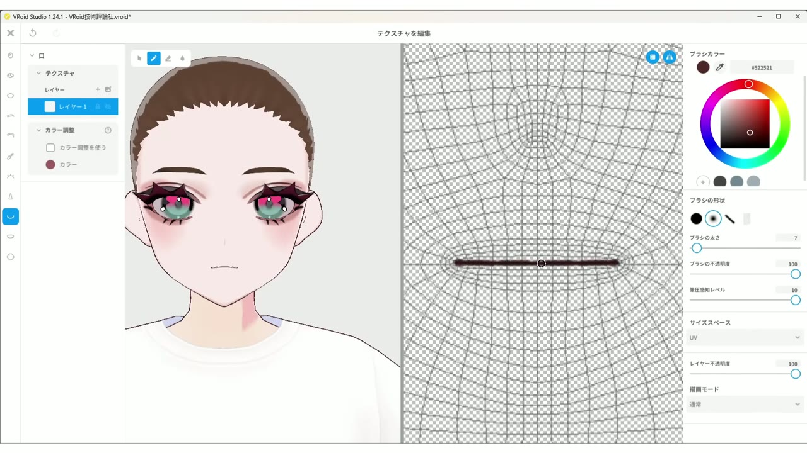
嘴的贴图拉得很近，在唇缝上画一条深棕 #522521。笔细，粗细 7，不透明度拉满。尺寸空间回到 UV。脸上的嘴这一帧还是一条细线，颜色会跟着这层走。这是嘴唇，不是后面的口腔。
鼻头点一块浅色
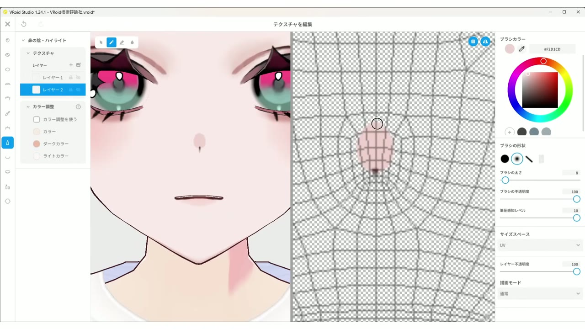
鼻头高光不画在皮肤的陰影上，改到鼻の陰・ハイライト。レイヤー2 上用 #F2D1CD 点一个小椭圆，粗细 8，不透明度 100，尺寸空间 UV。脸上鼻头就多一块浅粉。鼻梁上那条更深的线是前面阴影层留下的，不在这一层。
眉毛改成两条平眉
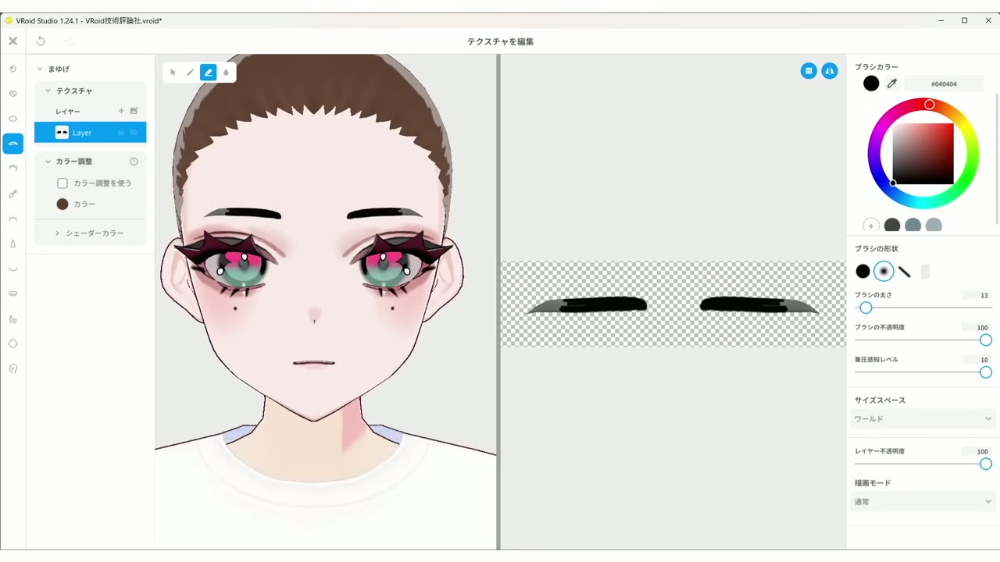
默认的细弯眉被盖掉。在眉毛 UV 上横着涂两条，颜色 #040404，粗细 13，不透明度 100，尺寸空间ワールド。眉形差不多是平的，没有挑高眉峰。这一帧眼下、鼻头一带的小黑点已经在，眉毛本身没有把那些点画进去。
侧面把鼻形压下去
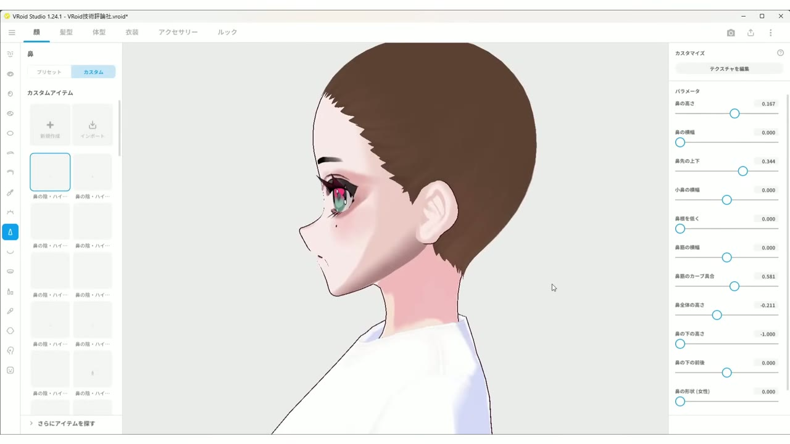
贴图点完，回到侧面改鼻形。这一帧鼻の高さ 0.167，鼻尖略高；鼻先の上下 0.344，鼻头往上。鼻筋のカーブ具合 0.581，鼻梁有一点弯。鼻全体の高さ -0.211，整只鼻子往下。鼻の下の高さ到最左 -1.000，鼻底压得很低，侧面看人中上面是平的。鼻の横幅、小鼻の横幅、鼻根を低く、鼻筋の横幅、鼻の下の前後、鼻の形状（女性）都是 0.000，没有用那条女性鼻形，也没有把鼻子加宽。开头那帧的 0.784 已经被这组换掉了。
睫毛在 CSP 里水平翻转
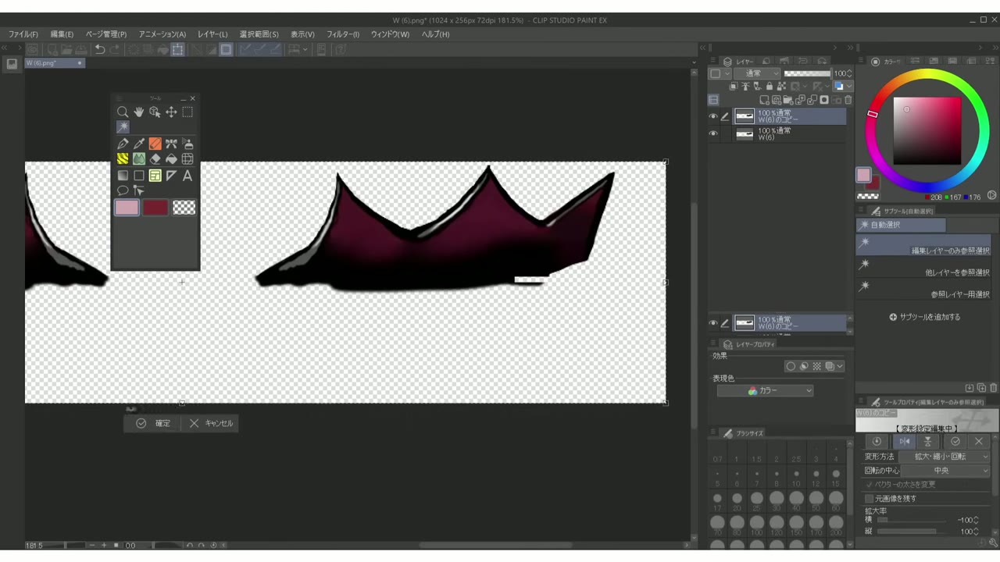
睫毛先在 VRoid 的まつげ（睫毛）里画。自定义页点过一个锯齿形预设，纹理レイヤー1 上是一排深色尖齿。然后把这张宽条贴图拿到 CSP。这一帧正在变形：横の拡大率是 -100、縦是 100，等于左右翻转，好让另一侧的尖角镜像过去。确定和取消都在画面上，还没看到点下去。也没看到导回 VRoid 的那一下。色环停在偏粉的位置，读数大约 208、167、176，睫毛本体是深褐，边上有黑线。
口腔深处涂暗
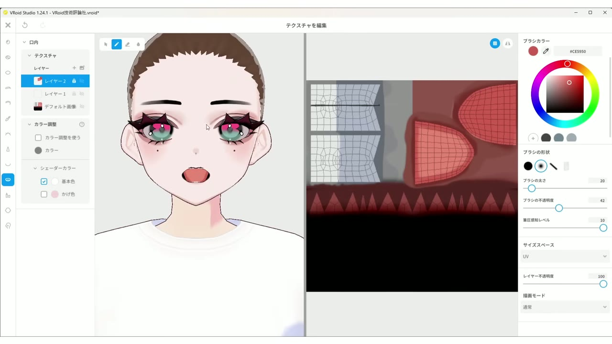
嘴唇和口腔是两个纹理。口内的デフォルト画像锁着，上面的レイヤー2 把口腔后部涂暗，颜色 #CE5950，粗细 20，不透明度 42，尺寸空间 UV。UV 上半还是牙齿和舌面的默认红，下半变成近黑，张嘴时喉咙里是暗的。基本色勾上，阴影色关掉，画上去的颜色按基本色显示。再早一帧还停在デフォルト画像上，笔是灰色 #333333，牙齿那一排还没被这层盖住。
表情里把「あ」拉开
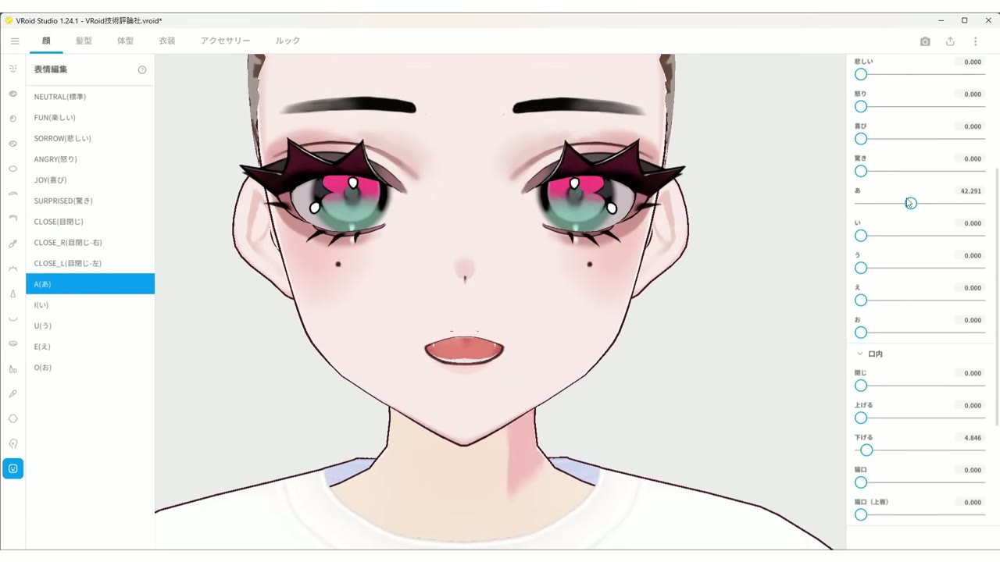
表情编辑里先点 A（あ），再把右侧的あ往右拉到 42.291，嘴张开一条缝，能看见上一步涂过的唇色。い、う、え、お这一帧都是 0.000。上面悲しい、怒り、喜び、驚き也是 0.000。口内这一组里，下げる是 4.846，闭上、抬起和下面两条是 0.000。列表里还有 NEUTRAL（標準）、FUN、SORROW、ANGRY、JOY、SURPRISED，以及 CLOSE（目閉じ）、CLOSE_R（目閉じ・右）、CLOSE_L（目閉じ・左）。稍后选过 O（お），滑杆到 61.674，嘴收成一个小圆；再往后点 CLOSE_R 时右眼闭上、左眼还睁着，尖眼线会跟着眼皮走。
拍摄页看这张脸
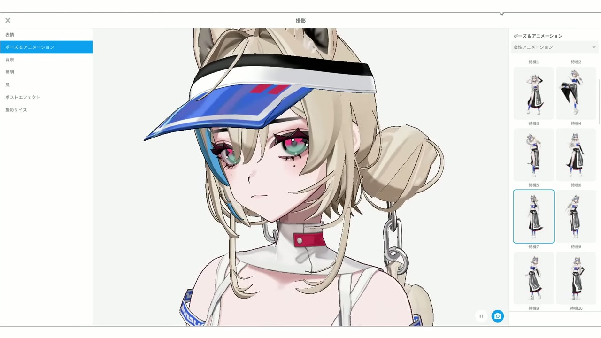
脸做完后打开拍摄。左侧还有表情、背景、照明、風、ポストエフェクト、撮影サイズ。这一帧停在女性动画的待機5，模型已经戴上遮阳帽、双团子和衣服。粉绿虹膜、尖眼线和眼下的点还在，和光头阶段是同一张脸。头发和服装这一章没有制作过程。